Comparison of gene expression accross time points for the two more active compounds (NCP 22 and MAZ 1392)
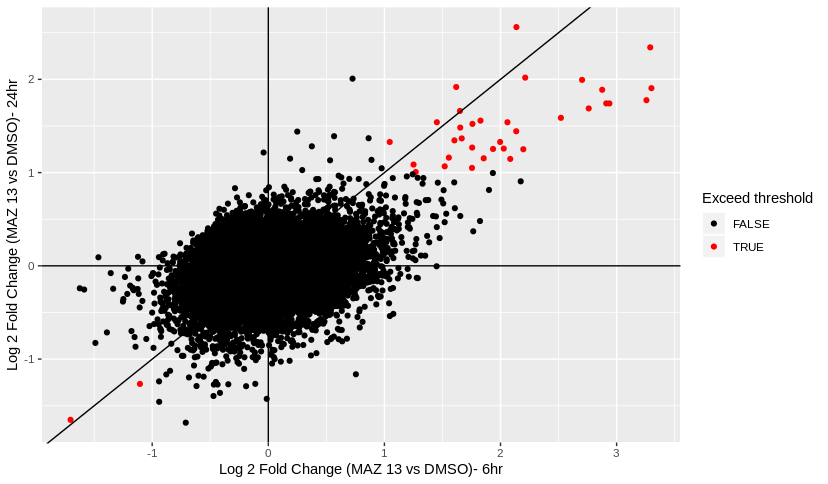
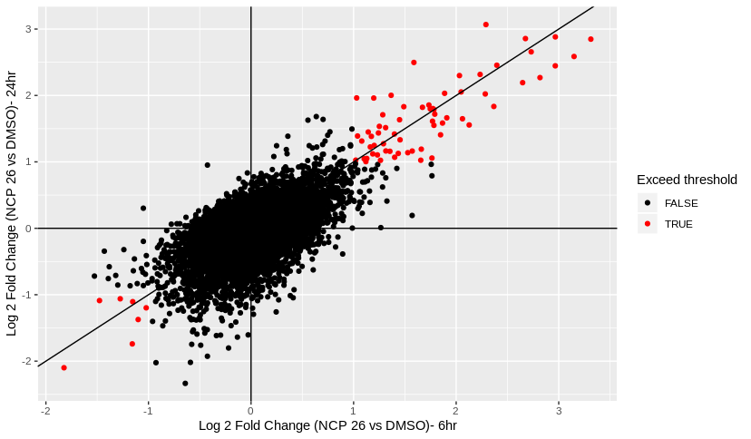
Red points show genes which have increase/decrease over twofold (abs(x)> 1 log2 FC) for both 6 hour and 24 hour time points.
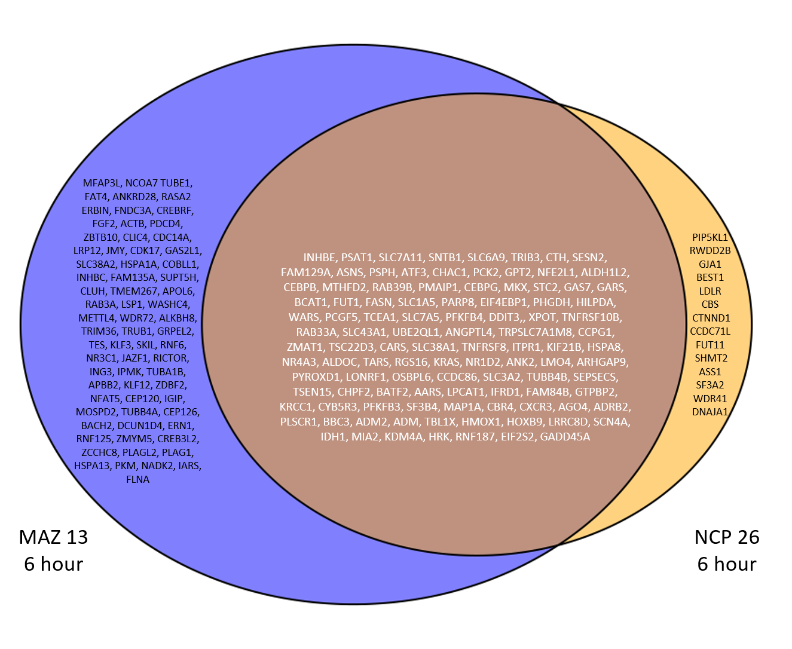 The intersection shows genes which are differentially expressed (padj <0.0.5 and abs(foldchange) >= 1) for both MAZ 13 and NCP 26 at the 6 hours time point.
MAZ 13 (6hr) only - 70 genes
NCP 26 (6hr) only - 14 genes
Both (6hr)- 106 genes
Total (6hr)- 190 genes
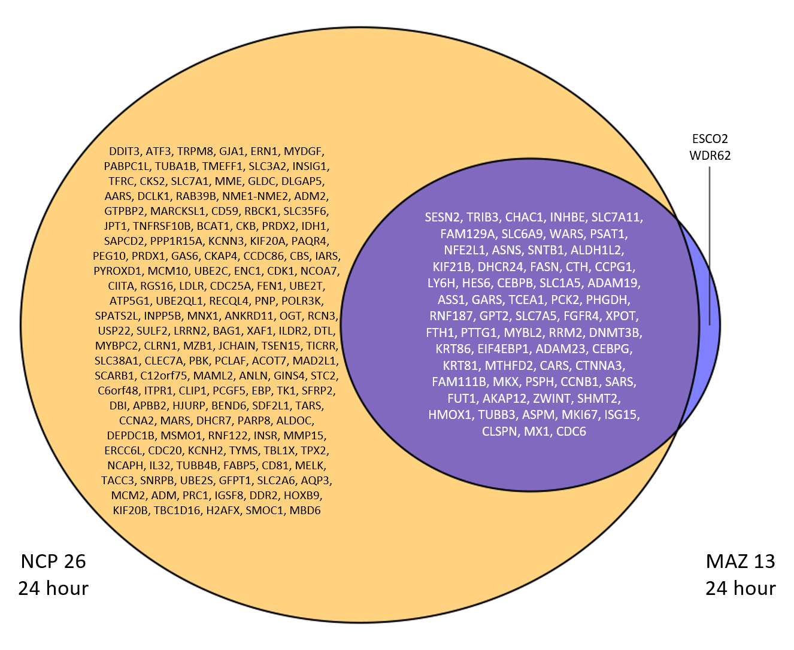 The intersection shows genes which are differentially expressed (abs(foldchange) >= 1) for both MAZ 13 and NCP 26 at the 24 hours time point.
MAZ 13 (24hr) only - 2 genes
NCP 26 (24hr) only - 145 genes
Both (24hr)- 63 genes
Total (24hr)- 210 genes
At 6 hours more genes were differentially expressed by MAZ 13, but by the 24 hour time point, MAZ 13 has only 2 unique genes not differentially expressed by NCP 26, whilst NCP 26 at 24 hours has many more differentially expressed genes.
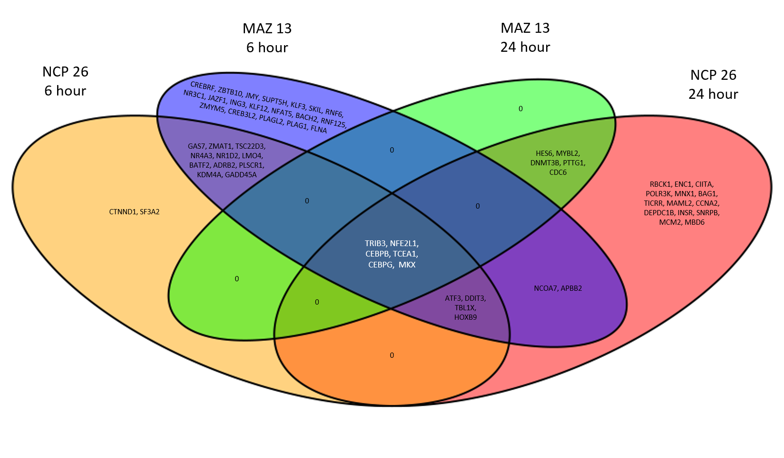 4 way cross of transcription factors with significant expression change (abs(log2 fc) >=1 and padj < 0.05 for 6hrs) compared to DMSO controls.
TFcheckpoint used. Not all transcription factors included have experimental evidence that they are indeed TFs, but are possible TF candidates.
Known genes involved in amino acid starvation response, expected to be upregulated 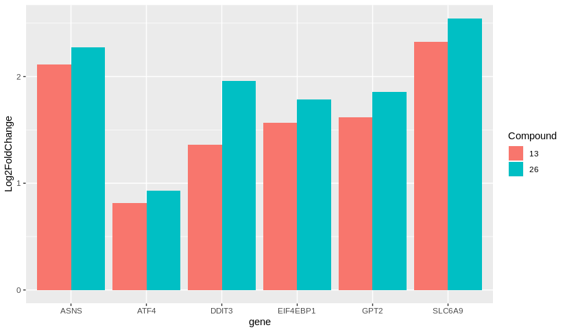 Gene vs mean log2 fc taken across both time points. MAZ 13 shown in pink, NCP 26 shown in green.
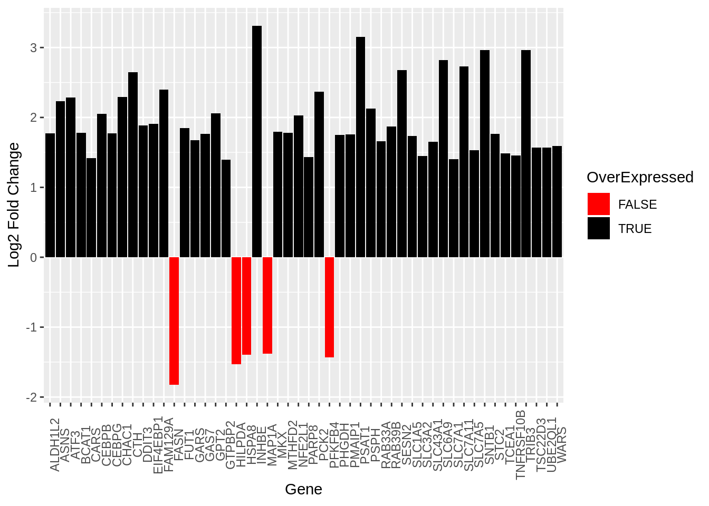
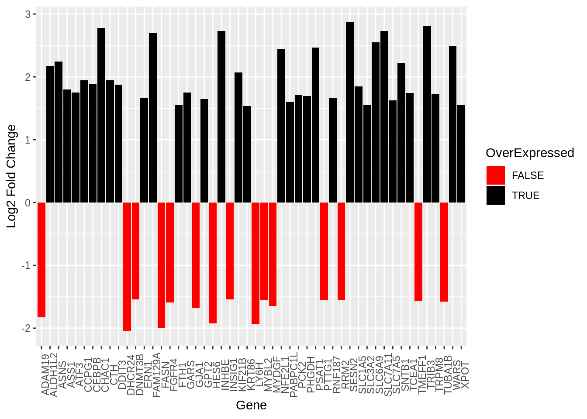
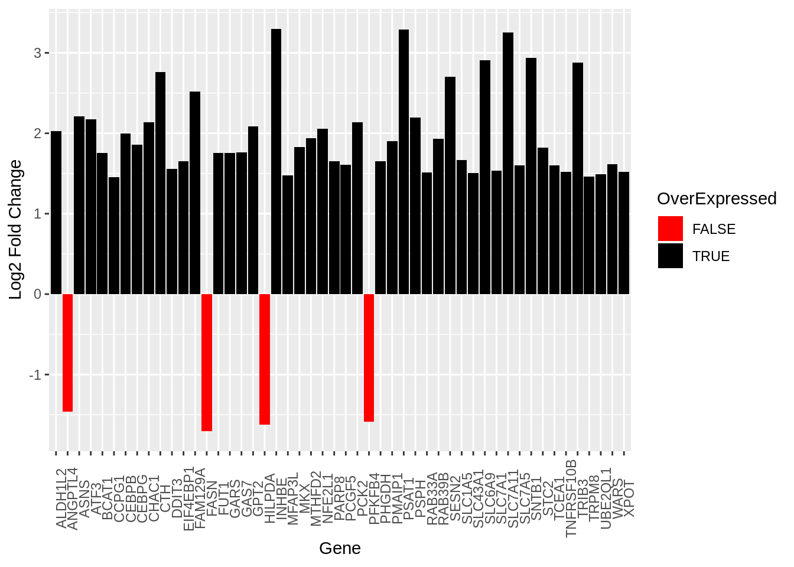
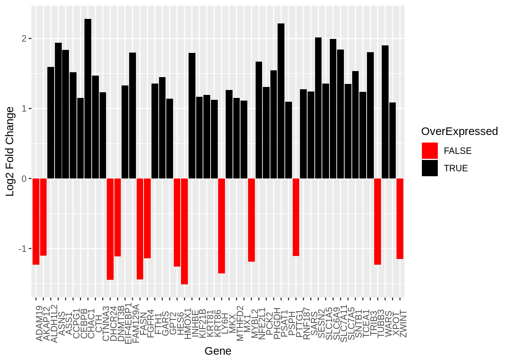
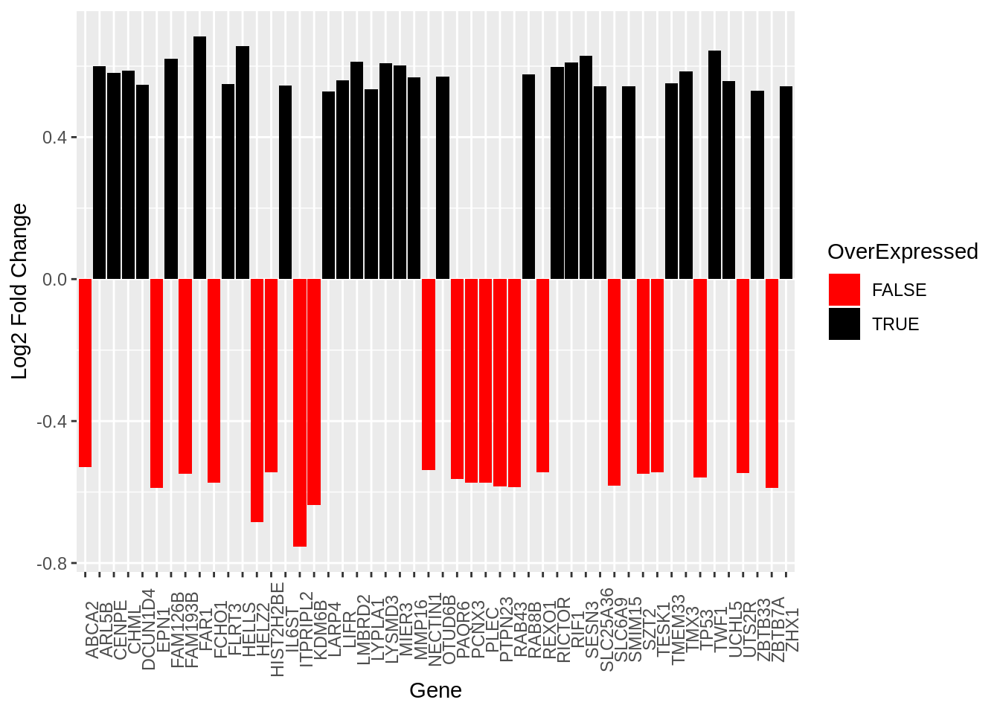
No NCP 22 genes or MAZ 18 (24 hours) were differentially expressed with the cut-off padj < 0.05. For 24 hours, as one DMSO was an outlier, only two control values were being used as reference for differential expression. Therefore padj values were not used as a cut-off, instead abs(log2 fc) > 1 has been used as a threshold.